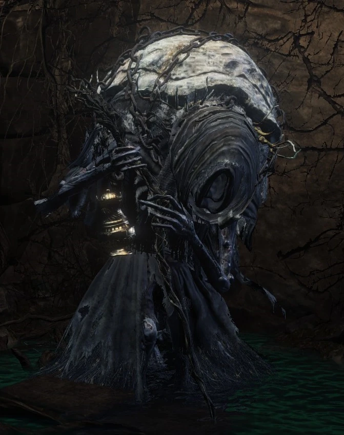

← Volver
← Volver
Yoel de Londor es un NPC de Dark Souls III. Puede ser encontrado por primera vez en el Asentamiento de los No Muertos, justo debajo de la hoguera del Pie del Gran Muero, donde él ofrecerá sus servicios. Luego de aceptar, se reubicará al Santuario del Enlace de Fuego y funcionará como un mercader. Para encontrarlo en el Santuario, acercarse al Herrero Andre, ir hacia la izquierda y luego de nuevo a la izquierda hasta el final del largo pasillo. Yoel es el único sobreviviente entre muchos otros peregrinos como él. Evenutalmente te enseñará el gesto "Señal".
Debes obtener este NPC antes de matar a los Vigilantes del Abismo o de otra fgorma lo encontrarás muerto y por consiguiente, serás incapaz de llevarlo al Santuario del Enlace de Fuego. En la misma nota, él morirá en el Santuario del Enlace una vez que mates a los Vigilantes. Para iniciar su línea de misión, selección "Conseguir Fuerza Verdadera" de su lista de diálogos un total de 5 veces antes de matar a los Vigilantes del Abismo y cuando él muera, Yuria de Londor tomará su lugar.
Puedes encontrar a Yoel de Londor en el Asentamiento de los No Muertos, donde él te ofrecerá sus servicios. Se encuentra justo debajo de la hoguera del Pie del Gran Muro. Luego de aceptar sus servicios, se reubicará al Santuario del Enlace de Fuego y funcionará como un mercadera. Para encontrarlo en el Santuario, acercate al Herrero Andre, ve a la izquierda dos veces y luego hasta el final del pasillo de la planta baja.
Luego de que Yoel se reubique en el Santuario del Enlace de Fuego, selecciona "Obtener Fuerza Verdadera" de su menú de diálogo. Luego de usarlo 5 veces, Yoel morirá y Yuria de Londor aparecerá. La oportunidad para recibir estos niveles gratis está atada a tu nivel de Ahuecamiento, que se incrementa cada vez que mueres en una cantidad igual a la cantidad de Sigilos Oscuros que posees. El primer nivel está disponible sin requerimientos, el segundo a nivel 2 de ahuecamiento, el tercero a nivel 6 de ahuecamiento, el cuarto a nivel 12 de ahuecamiento y el quinto y último, a nivel 15 de ahuecamiento.
Como la cantidad de ahuecamiento por muerte es igual a la cantidad de Sigilos Oscuros que posees, solo necesitarás morir dos veces entre cada nivel, excepto por el último, donde necesitarás morir solo una vez. Necesitarás los 5 Sigilos Oscuros para conseguir el final Usurpación de la Llama.
ADVERTENCIA: Morirá prematuramente si remueves/te curas los Sigilos Oscuros antes de recibir los 5 sigilos y acelerará el final de la línea de misión de Yoel/Yuria, finalizando también la posibilidad de completar la misión hasta el siguiente ciclo de juego.
Diseños tempranos sugieren que los Peregrinos fueron alguna vez similares a los Hombres Serpiente, siendo llamados "Llamadores del Eclipse".
| Objetos | Cantidad | Almas | Requerimiento |
|---|---|---|---|
| Flecha del Alma | 1 | 1000 | - |
| Flecha del Alma Pesada | 1 | 2000 | - |
| Espadón del Alma | 1 | 5000 | Extraer Fuerza Verdadera al menos una vez |
| Arma Mágica | 1 | 4500 | - |
| Escudo Mágico | 1 | 4500 | - |
Diálogo del primer encuentro
"(Grito desesperado) Por favor, concédeme la muerte, deshazme de mis ataduras. Ohh... Ohh, entonces es cierto... Un Campeón de Ceniza, como vivo y respiro. Estar en tu presencia es un gran honor. Soy Yoel de Londor, un peregrino como puedes ver, solo que... De alguna manera, no he muerto como estaba ordenado. Bueno, tal vez mi vocación esté en otra parte. Dime, Campeón de Ceniza, ¿qué te parece la idea de tomarme a tu servicio? Una vez fui hechicero. Seguro que puedo serte útil."
Al rechazar sus servicios
"Ahh, mm, sí, por supuesto. Un peregrino maldito no tiene cabida en tu honorable servicio. Pero si un alma perdida se topa con una leyenda como tú, ¿podría ser otra cosa que un capricho del destino? Permaneceré aquí. Rezando solemnemente para que cambies de opinión. (Permanece en el sitio)"
Al hablarle luego de rechazar sus servicios
"Ahh, Campeón de Ceniza. ¿Has cambiado de opinión? Te lo ruego, tómame a tu servicio."
Al aceptar su servicios
"Ohh. Es un honor, de verdad. Debería estar muerto, pero me has dado un nuevo propósito. Yo, Yoel de Londor, te juro solemnemente." (Se teletransporta/se desvanece)"
Segundo encuentro (Santuario del Enlace de Fuego)
"Oh, nuestro Campeón de Ceniza, bienvenido a casa. Este peregrino, con una deuda de muerte, difícilmente merece contemplar esta llama divina. Y yo nunca lo habría hecho si no me hubieras tomado a tu servicio. Te agradezco profundamente por esto... Y te aseguro mi leal servicio."
Al seleccionar "hablar"
"Como ya he dicho, una vez fui hechicero. Por desgracia, la magia de Londor dista mucho de las maravillas de Vinheim. Pero puedo enseñarte lo que sé. Quizás más importante... creo que puedo ayudarte a descubrir tu verdadera fuerza. Los peregrinos de Londor somos muy conscientes de que aquellos marcados por la Señal Oscura poseen algo muy especial..."
Al seleccionar "Extraer Fuerza Verdadera"
"Entonces, ¿comenzamos? Portador de la Señal Oscura, deja que tu verdadera fuerza brille..."
Al seleccionar "hablar" luego de extraer Fuerza Verdadera por primera vez
"Oh, nuestro Campeón de Ceniza, bienvenido de nuevo. Haría cualquier cosa por mi amo, solo di una palabra."
Al seleccionar "salir"
"Cuídate, Campeón de Ceniza."
Al conseguir 5 Sigilos Oscuros
"Ah, has alcanzado la fuerza suficiente. Pronto todo se aclarará, mi buen Señor..."
Al matarlo (Asentamiento de los No Muertos)
"¡Qué te pasa!" "¿Matar No Muertos por diversión, campeón maldito?"
Al matarlo (Antes de conseguir 5 Sigilos Oscuros)
"¿Qué pretendes?" "Lady Yuria..."
Al matarlo (Después de conseguir 5 Sigilos Oscuros)
"Ahh, muchas gracias... Nuestro bondadoso Señor..."

 ↑
↑